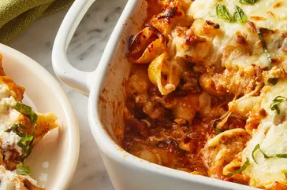

LASAGNA

Description
Ingredients
- (12 ounce) box jumbo pasta shells
- ¼ cup extra-virgin olive oil, divided
- 1 pound ground sirloin
- 1 pound Italian sausage, hot or sweet
- 1 small yellow onion, finely chopped
- 6 cloves garlic, thinly sliced
STEPS
- Preheat the oven to 375 degrees F (190 degrees C). Set a rack in the center of the oven, about 10 inches from the heat source.
- Bring a large pot of salted water to a boil. Add shells and cook, stirring occasionally, until almost tender, about 7 minutes. Scoop out 1/2 cup cooking water; set aside. Drain pasta in a colander. Return to pot and toss with 1 tablespoon oil.
- Reduce heat to medium. Add onion and garlic, and cook, stirring often, until softened, about 4 minutes. Stir in marinara sauce, basil, and crushed red pepper. Remove ragu from heat.
- Stir together ricotta, Parmigiano-Reggiano, cream, and salt in a bowl.
- Bake in preheated oven for 30 minutes. Remove from oven and remove foil. Increase oven temperature to broil with rack about 10 inches from heat source; preheat 5 minutes. Return baking dish to oven. Broil until cheese is browned in spots, 5 to 8 minutes.